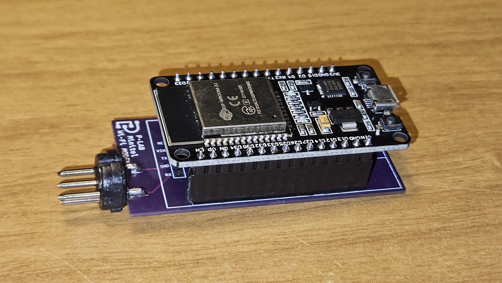
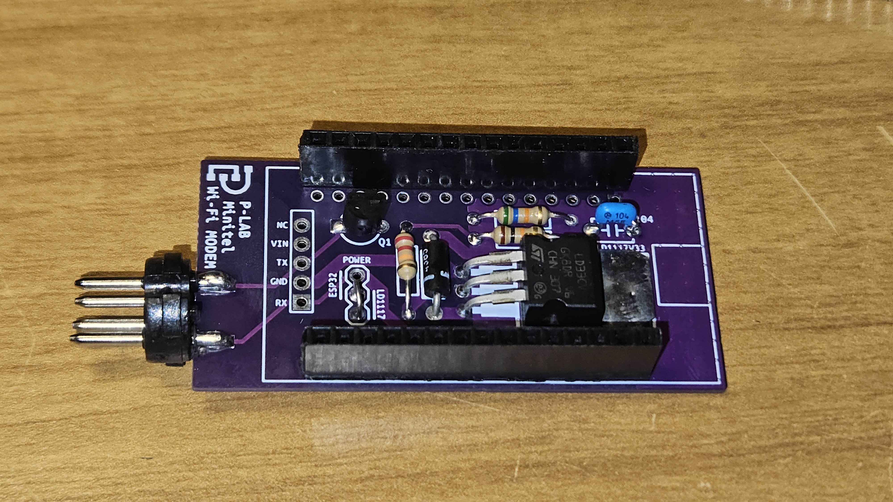

MINITEL ADF-258 WI-FI MODEM
 Based on:
https://github.com/iodeo/Minitel-ESP32/
http://retrocomputing.c3po.it/Retronomicon/html/alcatel.htm/
Documents hosted here:
PROJECT DOCUMENTATIONProject Description ENG [txt]
Bill of Materials ENG [txt]
Firmware [html]
Compatibility notes for TELIC ALCATEL "MINITEL R 722 680C" [txt]
Compatibility notes for VIDEOTEL/SIP "TTM90/TL" [txt]
Compatibility notes for PHILIPS "HCS80" [txt]
Gerber files:
PCB Gerber file - PCB thickness: 1 mm [zip]
For any information -or expression of interest- please drop me a line at the email address below, thank you!
This work is licensed under CC BY 4.0